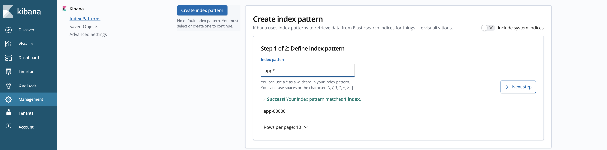
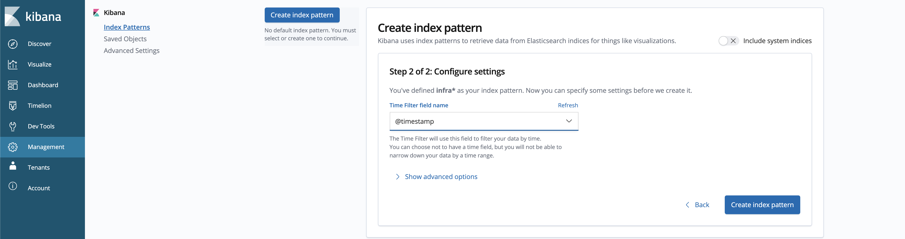
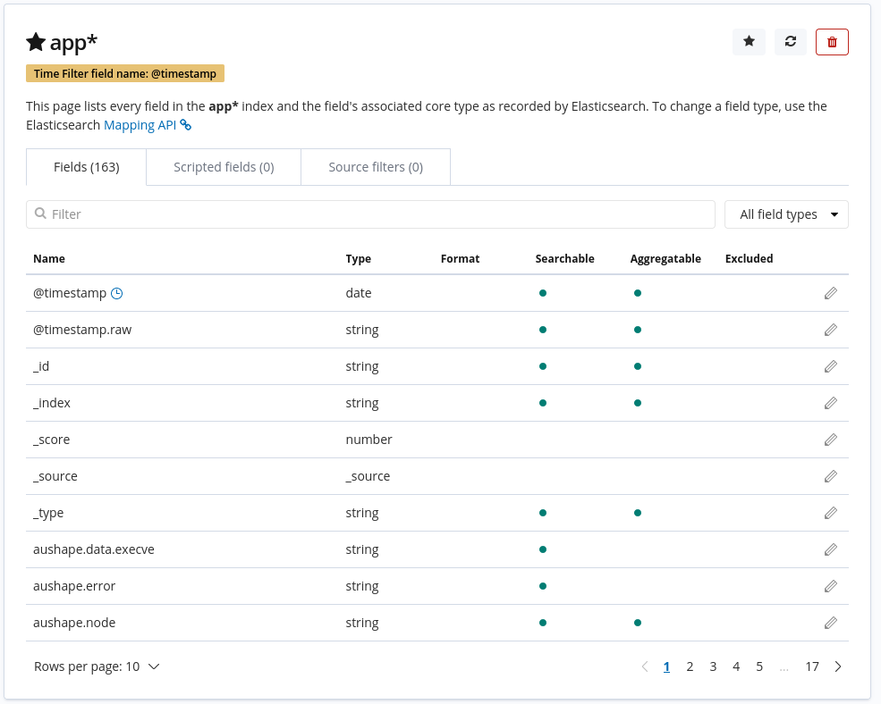
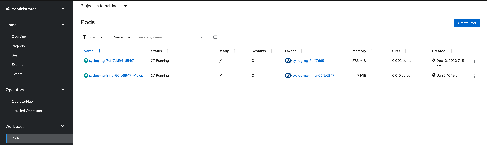
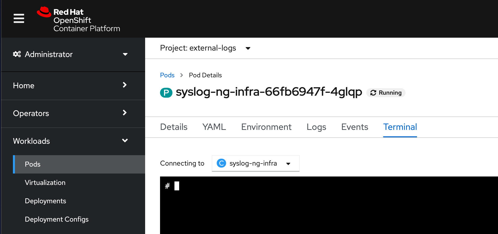
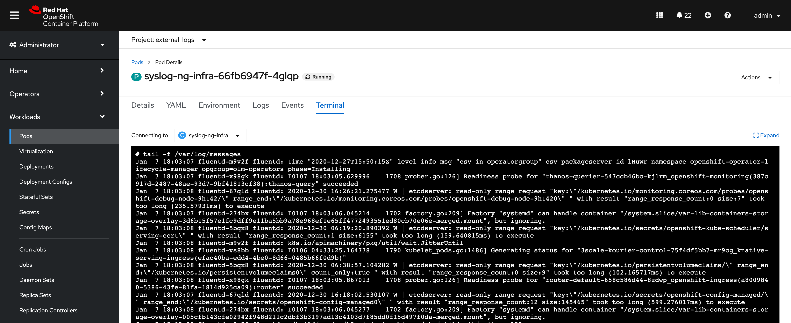

OpenShift Log Aggregation
An extremely important function of OpenShift is collecting and aggregating logs from the environments and the application pods it is running. OpenShift ships with an elastic log aggregation solution: EFK. (ElasticSearch, Fluentd and Kibana)
The cluster logging components are based upon Elasticsearch, Fluentd, and Kibana (EFK). The collector, Fluentd, is deployed to each node in the OpenShift cluster. It collects all node and container logs and writes them to Elasticsearch (ES). Kibana is the centralized, web UI where users and administrators can create rich visualizations and dashboards with the aggregated data. Administrators can see and search through all logs. Application owners and developers can allow access to logs that belong to their projects. The EFK stack runs on top of OpenShift.
|
This lab requires that you have completed the infra-nodes lab. The logging
stack will be installed on the |
|
More information may be found on the official OpenShift documentation site |
|
This exercise is done almost entirely using the OpenShift web console. All of the interactions with the web console are effectively creating or manipulating API objects in the background. It is possible to fully automate the process and/or do it using the CLI or other tools, but these methods are not covered in the exercise or documentation at this time. |
Deploying OpenShift Logging
OpenShift Container Platform cluster logging is designed to be used with the default configuration, which is tuned for small to medium sized OpenShift Container Platform clusters. The installation instructions that follow include a sample Cluster Logging Custom Resource (CR), which you can use to create a cluster logging instance and configure your cluster logging deployment.
If you want to use the default cluster logging install, you can use the sample CR directly.
If you want to customize your deployment, make changes to the sample CR as needed. The following describes the configurations you can make when installing your cluster logging instance or modify after installtion. See the Configuring sections for more information on working with each component, including modifications you can make outside of the Cluster Logging Custom Resource.
Create the openshift-logging namespace
OpenShift Logging will be run from within its own namespace
openshift-logging. This namespace does not exist by default, and needs to
be created before logging may be installed. The namespace is represented in
yaml format as:
apiVersion: v1
kind: Namespace
metadata:
name: openshift-logging
annotations:
openshift.io/node-selector: ""
labels:
openshift.io/cluster-logging: "true"
openshift.io/cluster-monitoring: "true"To create the namespace, run the following command:
oc create -f madopssupport/openshift_logging_namespace.yamlVerify that it has been created:
oc get namespace openshift-loggingYou should see the following output:
NAME STATUS AGE
openshift-logging Active 11sInstall the Elasticsearch and Cluster Logging Operators in the cluster
In order to install and configure the EFK stack into the cluster,
additional operators need to be installed. These can be installed from the
Operator Hub from within the cluster via the GUI.
When using operators in OpenShift, it is important to understand the basics
of some of the underlying principles that make up the Operators.
CustomResourceDefinion (CRD) and CustomResource (CR) are two Kubernetes
objects that we will briefly describe.CRDs are generic pre-defined
structures of data. The operator understands how to apply the data that is
defined by the CRD. In terms of programming, CRDs can be thought as being
similar to a class. CustomResource (CR) is an actual implementations of the
CRD, where the structured data has actual values. These values are what the
operator will use when configuring it’s service. Again, in programming terms,
CRs would be similar to an instantiated object of the class.
The general pattern for using Operators is first, install the Operator, which
will create the necessary CRDs. After the CRDs have been created, we can
create the CR which will tell the operator how to act, what to install,
and/or what to configure. For installing openshift-logging, we will follow
this pattern.
To begin, Please use the following link below to log-in
to the OpenShift Cluster’s GUI. (Please do not use built-in console)
%MASTER_URL%
Then follow the following steps:
-
Install the Elasticsearch Operator:
-
In the OpenShift console, click
Operators→OperatorHub. -
Type
Elasticsearch Operatorin the search field and click theOpenShift Elasticsearch Operatorcard from the list of available Operators (please choose the newest version you can see which should be '5.5.1'), and then clickInstall. -
On the
Create Operator Subscriptionpage, select Update Channelstable, leave all other defaults and then clickInstall.This makes the Operator available to all users and projects that use this OpenShift Container Platform cluster.
-
-
Install the Cluster Logging Operator:
The
Cluster Loggingoperator needs to be installed in theopenshift-loggingnamespace. Please ensure that theopenshift-loggingnamespace was created from the previous steps-
In the OpenShift console, click
Operators→OperatorHub. -
Type
OpenShift Loggingin the search box and click theRed Hat OpenShift Loggingcard from the list of available Operators (please choose the newest version you can see which should be '5.5.1'), and clickInstall. -
On the
Install Operatorpage, select Update Channelstable. UnderInstallation Modeensure thatA specific namespace on the clusteris selected, and chooseOperator recommended Namespace: openshift-loggingunderInstalled Namespace. Leave all other defaults and then clickInstall.
-
-
Verify the operator installations:
-
Switch to the
Operators→Installed Operatorspage. -
Make sure the
openshift-loggingproject is selected. -
In the Status column you should see green checks with either
InstallSucceededorCopiedand the text Up to date.During installation an operator might display a
Failedstatus. If the operator then installs with anInstallSucceededmessage, you can safely ignore theFailedmessage. Also, if you’re using theConsoletab, you may or maynot see theStatuscolumn. When in doubt, visit the console via the link.
-
-
Troubleshooting (optional/if needed)
If either operator does not appear as installed, to troubleshoot further:
-
On the Copied tab of the Installed Operators page, if an operator show a Status of Copied, this indicates the installation is in process and is expected behavior.
-
Switch to the Catalog → Operator Management page and inspect the Operator Subscriptions and Install Plans tabs for any failure or errors under Status.
-
Switch to the Workloads → Pods page and check the logs in any Pods in the openshift-logging and openshift-operators projects that are reporting issues.
-
Create the Loggging CustomResource (CR) instance
Now that we have the operators installed, along with the CRDs, we can now
kick off the logging install by creating a Logging CR. This will define how
we want to install and configure logging.
-
In the OpenShift Console, switch to the the
Administration→Custom Resource Definitionspage. -
On the
Custom Resource Definitionspage, search forLoggingin the search field and clickClusterLogging. -
On the
Custom Resource Definition Overviewpage, selectInstancesfrom theActionsmenu.If you see a
404error, don’t panic. While the operator installation succeeded, the operator itself has not finished installing and theCustomResourceDefinitionmay not have been created yet. Wait a few moments and then refresh the page. -
On the
Cluster Loggingspage, clickCreate Cluster Logging. -
In the
YAMLeditor, replace the code with the following:
apiVersion: "logging.openshift.io/v1"
kind: "ClusterLogging"
metadata:
name: "instance"
namespace: "openshift-logging"
spec:
managementState: "Managed"
logStore:
type: "elasticsearch"
elasticsearch:
nodeCount: 3
storage:
storageClassName: gp2
size: 100Gi
redundancyPolicy: "SingleRedundancy"
nodeSelector:
node-role.kubernetes.io/infra: ""
resources:
request:
memory: 4G
visualization:
type: "kibana"
kibana:
replicas: 1
nodeSelector:
node-role.kubernetes.io/infra: ""
curation:
type: "curator"
curator:
schedule: "30 3 * * *"
nodeSelector:
node-role.kubernetes.io/infra: ""
collection:
logs:
type: "fluentd"
fluentd: {}
nodeSelector:
node-role.kubernetes.io/infra: ""Then click Create.
Verify the Loggging install
Now that Logging has been created, let’s verify that things are working.
-
Switch to the
Workloads→Podspage. -
Select the
openshift-loggingproject.
You should see pods for cluster logging (the operator itself), Elasticsearch, and Fluentd, and Kibana.
Alternatively, you can verify from the command line by using the following command:
oc get pods -n openshift-loggingYou should eventually see something like:
NAME READY STATUS RESTARTS AGE cluster-logging-operator-5d4b6f7b99-ksr5s 1/1 Running 0 113s collector-2p5fx 2/2 Running 0 26s collector-7lw5r 2/2 Running 0 42s collector-8stvf 2/2 Running 0 32s collector-b7qs8 2/2 Running 0 27s collector-clfsc 2/2 Running 0 16s collector-f2tzf 2/2 Running 0 31s collector-j6hxp 2/2 Running 0 10s collector-kdvj8 2/2 Running 0 30s collector-q6wck 2/2 Running 0 21s collector-sgndk 2/2 Running 0 17s collector-w5ds9 2/2 Running 0 29s collector-zswpb 2/2 Running 0 34s elasticsearch-cdm-mnc985r3-1-5c45b9bd9f-4nx56 2/2 Running 0 70s elasticsearch-cdm-mnc985r3-2-779989b7bb-z9dpp 1/2 Running 0 69s elasticsearch-cdm-mnc985r3-3-6d754c8cbf-fx8wd 1/2 Running 0 68s kibana-655877db88-njsqq 2/2 Running 0 70s
The Collector Pods are deployed as part of a DaemonSet, which is a mechanism to ensure that specific Pods run on specific Nodes in the cluster at all times:
oc get daemonset -n openshift-loggingYou will see something like:
NAME DESIRED CURRENT READY UP-TO-DATE AVAILABLE NODE SELECTOR AGE collector 12 12 0 12 0 kubernetes.io/os=linux 1s
You should expect 1 collector Pod for every Node in your cluster.
Remember that Masters are still Nodes and collector will run there, too,
to slurp the various logs.
You will also see the storage for ElasticSearch has been automatically provisioned. If you query the PersistentVolumeClaim objects in this project you will see the new storage.
oc get pvc -n openshift-loggingYou will see something like:
NAME STATUS VOLUME CAPACITY ACCESS
MODES STORAGECLASS AGE
elasticsearch-elasticsearch-cdm-ks56pg34-1 Bound pvc-31536af7-b512-4365-9f3d-f617327266d3 100Gi RWO
gp2 63s
elasticsearch-elasticsearch-cdm-ks56pg34-2 Bound pvc-85f854d0-a3fa-4bb2-90a9-96655b8a0884 100Gi RWO
gp2 63s
elasticsearch-elasticsearch-cdm-ks56pg34-3 Bound pvc-5a5ed5f3-c96d-475e-ab71-725a6b014c88 100Gi RWO
gp2 63s
|
Much like with the Metrics solution, we defined the appropriate
|
Accessing Kibana
As mentioned before, Kibana is the front end and the way that users and admins may access the OpenShift Logging stack. To reach the Kibana user interface, first determine its public access URL by querying the Route that got set up to expose Kibana’s Service:
To find and access the Kibana route:
-
In the OpenShift console, click on the
Networking→Routespage. -
Select the
openshift-loggingproject. -
Click on the
Kibanaroute. -
In the
Locationfield, click on the URL presented. -
Click through and accept the SSL certificates (if needed)
Alternatively, this can be obtained from the command line:
oc get route -n openshift-loggingYou will see something like:
NAME HOST/PORT PATH SERVICES PORT TERMINATION WILDCARD kibana kibana-openshift-logging.%ROUTE_SUBDOMAIN% kibana <all> reencrypt/Redirect None
Or, you can control+click the link:
There is a special authentication proxy that is configured as part of the EFK installation that results in Kibana requiring OpenShift credentials for access.
Because you’ve already authenticated to the OpenShift Console as a cluster-admin user, you will see an administrative view of what Kibana has to show you (which you authorized by clicking the button).
Setting up Index Patterns
Once you open Kibana, before being able to view logs, we need to define an index pattern that will be used by Kibana to query ElasticSearch.
-
On the following screen, input
app*as the index pattern, as shown below and clickNext Step. -
On the next screen, select
@timestampin the drop-down box, as shown below: -
Click
Create Index Pattern -
You should see the following summary screen.
 -
Click on "Discover" on the upper left side of the screen.
Queries with Kibana
Once the Kibana web interface is up, we are now able to do queries. Kibana offers the user a powerful interface to query all logs that come from the cluster.
By default, Kibana will show all logs that have been received within the the last 15 minutes. This time interval may be changed in the upper right hand corner. The log messages are shown in the middle of the page. All log messages that are received are indexed based on the log message content. Each message will have fields that are associated with that log message. To see the fields that make up an individual message, click on the arrow on the side of each message located in the center of the page. This will show the message fields that are contained.
To select fields to show for messages, look on left hand side for the
Available Fields label. Below this are fields that can be selected and
shown in the middle of the screen. Find the hostname field below the
Available Fields and click add. Notice now, in the message pain, each
message’s hostname is displayed. More fields may be added. Click the add
button for kubernetes.pod_name and also for message.
To create a query for logs, the Add a filter + link right below the search
box may be used. This will allow us to build queries using the fields of the
messages. For example, if we wanted to see all log messages from the
lab-ocp-cns namespace, we can do the following:
-
Click on
Add a filter +. -
In the
Fieldsinput box, start typingkubernetes.namespace_name. Notice all of the available fields that we can use to build the query -
Next, select
is. -
In the
Valuefield, type inlab-ocp-cns -
Click the "Save" button
Now, in the center of the screen you will see all of the logs from all the
pods in the lab-ocp-cns namespace.
Of course, you may add more filters to refine the query.
One other neat option that Kibana allows you to do is save queries to use for later. To save a query do the following:
-
click on
Saveat the top of the screen. -
Type in the name you would like to save it as. In this case, let’s type in
lab-ocp-cns namespace
Once this has been saved, it can be used at a later time by hitting the
Open button and selecting this query.
Please take time to explore the Kibana page and get experience by adding and doing more queries. This will be helpful when using a production cluster, you will be able to get the exact logs that you are looking for in a single place.
Forwarding logs to external systems
In this section we will show you how to forward logs to external log systems.
A new CustomResourceDefinition (CRD) named ClusterLogForwarder is used by the Cluster Logging Operator to create or modify internal Fluentd configmaps to forward logs to external (or internal) systems.
Only one ClusterLogForwarder can exist in a cluster, and it combines all of the log forwarding rules.
Forwarding cluster logs to external third-party systems requires a combination of outputs and pipelines specified in a ClusterLogForwarder custom resource (CR) to send logs to specific endpoints inside and outside of your OpenShift Container Platform cluster. You can also use inputs to forward the application logs associated with a specific project to an endpoint. Let’s learn more about these concepts.
-
An
outputis the destination for log data that you define, or where you want the logs sent. An output can be one of the following types:-
elasticsearch: An external Elasticsearch v5.x or v6.x instance. The elasticsearch output can use a TLS connection. -
fluentdForward: An external log aggregation solution that supports Fluentd. This option uses the Fluentd forward protocols. ThefluentForwardoutput can use a TCP or TLS connection and supports shared-key authentication by providing a shared_key field in a secret. Shared-key authentication can be used with or without TLS. -
syslog: An external log aggregation solution that supports the syslog RFC3164 or RFC5424 protocols. The syslog output can use a UDP, TCP, or TLS connection. -
kafka: A Kafka broker. The kafka output can use a TCP or TLS connection. -
default: The internal OpenShift Container Platform Elasticsearch instance. You are not required to configure the default output. If you do configure a default output, you receive an error message because the default output is reserved for the Cluster Logging Operator.
-
If the output URL scheme requires TLS (HTTPS, TLS, or UDPS), then TLS server-side authentication is enabled. To also enable client authentication, the output must name a secret in the openshift-logging project. The secret must have keys of: tls.crt, tls.key, and ca-bundle.crt that point to the respective certificates that they represent.
-
A
pipelinedefines simple routing from one log type to one or more outputs, or which logs you want to send. The log types are one of the following:-
application: Container logs generated by user applications running in the cluster, except infrastructure container applications. -
infrastructure: Container logs from pods that run in the openshift*, kube*, or default projects and journal logs sourced from node file system. -
audit: Logs generated by the node audit system (auditd) and the audit logs from the Kubernetes API server and the OpenShift API server.
-
You can add labels to outbound log messages by using key:value pairs in the pipeline. For example, you might add a label to messages that are forwarded to others data centers or label the logs by type. Labels that are added to objects are also forwarded with the log message.
-
An input forwards the application logs associated with a specific project to a pipeline.
|
More information may be found on the official OpenShift documentation site |
Sending logs to an external Syslog server
For the sake of simplification, we will emulate an external Syslog server by deploying a containerized Syslog server in a namespace called external-logs.
Since we also want to show how to separate application logs from infrastructure logs, we will deploy 2 'external' (containerized) Syslogs, one to receive forwarded application logs, and one to receive forwarded infrastructure logs.
First, let’s create a namespace called external-logs where we will deploy the Syslog server.
oc new-project external-logsNow, let’s deploy the Syslog servers on that namespace. For that, we’ll be using a YAML file containing all the required resources:
oc create -f madopssupport/extlogs-syslog.yaml -n external-logsLet’s check that everything is working fine, which can take a minute until the image is pulled for an external registry. When everything is OK, we should get an output similar to this:
oc get pods -n external-logsYou should see the following output.
NAME READY STATUS RESTARTS AGE
syslog-ng-84c59fdc8-mdwrs 1/1 Running 0 81s
syslog-ng-infra-697fc7597f-gwrxd 1/1 Running 0 81s|
If one of your pods is in a |
Now that our external Syslog server is available, let’s setup a log forwarding rule by creating a ClusterLogForwarder.
First let’s look at the YAML file:
apiVersion: logging.openshift.io/v1
kind: ClusterLogForwarder
metadata:
name: instance
namespace: openshift-logging
spec:
outputs: (1)
- name: rsyslog-app
syslog:
facility: user
payloadKey: message
rfc: RFC3164
severity: informational
type: syslog (2)
url: udp://syslog-ng.external-logs.svc:514 (3)
- name: rsyslog-infra
syslog:
facility: user
payloadKey: message
rfc: RFC3164
severity: informational
type: syslog
url: udp://syslog-ng-infra.external-logs.svc:514 (4)
pipelines: (5)
- inputRefs: (6)
- application (7)
labels:
syslog: app
name: syslog-app
outputRefs:
- rsyslog-app (8)
- default
- inputRefs:
- infrastructure (8)
labels:
syslog: infra
name: syslog-infra
outputRefs:
- rsyslog-infra (9)
- defaultIn this YAML file, there are some notable fields:
-
The
outputs(1) section defines all the remote log systems, in our case we have 2 Syslog servers: -
(2) This defines the type of log aggragator that is being used.
-
(3) This is the url for the one to store application-related logs. It is pointing to the service that is in the
external-logsnamespace. -
(4) This is the url one for infrastructure-related logs. It is pointing to the service that is in the
external-logsnamespace. -
The
pipelines(5) section defines the sources and nature of logs that should be sent to the outputs defined before. -
The
inputRefs(6) are used to describe the nature of the log to be sent, and as a reminder they can be eitherapplication,infrastructure, orauditfor OpenShift audit logs (API access, etc). -
We have 2 inputsRefs, (7) is for application logs and (8) is for infrastructure logs.
Each inputRefs section contains an outRefs to tell where the logs should be sent, referring the outputs (1) defined in the beginning of the spec section.
Now let’s create the ClusterLogForwarder resource using the YAML file:
oc create -f madopssupport/extlogs-clusterlogforwarder.yamlOnce the CR is created, the Cluster Logging Operator deploys the collector pods. Wait for the deploy to happen.
oc rollout status ds/collector -n openshift-loggingIf the pods do not redeploy, you can delete the collector pods manually to force them to redeploy.
oc delete pod --selector logging-infra=collector -n openshift-loggingLet’s check that all the collector pods are now in Running state:
oc get pod --selector logging-infra=collector -n openshift-loggingYou should see something like this in the output:
NAME READY STATUS RESTARTS AGE
collector-2mk4h 2/2 Running 0 37s
collector-4dfnc 2/2 Running 0 38s
collector-99rh4 2/2 Running 0 37s
collector-c7msc 2/2 Running 0 38s
collector-gb7nh 2/2 Running 0 38s
collector-k8khn 2/2 Running 0 37s
collector-lt8j4 2/2 Running 0 38s
collector-pzqxw 2/2 Running 0 37s
collector-w54c5 2/2 Running 0 37sNow let’s check that the logs are being forwarded to the 2 Syslog servers.
The Syslog server stores it’s logs in the /var/log/messages file within the container, so we need to check it’s content by doing an oc exec into the container via the Web Console.
We will be using the OpenShift Console Terminal to access the pod and check the /var/log/messages content.
-
Open the Administrator View and go to
workloads→Pods. Make sure you’re on theexternal-logsProject. -
Click on the syslog infrastructure pod, which name looks like
syslog-ng-infra-xyz, and go the theTerminaltab (you may have to hit enter a few times to see the#prompt) -
In the Terminal box, enter this command:
tail -f /var/log/messages. The forwarded logs should then appear in the terminal.And voilà! You can repeat this procedure with the other pod to check that the application logs are correctly forwarded too.